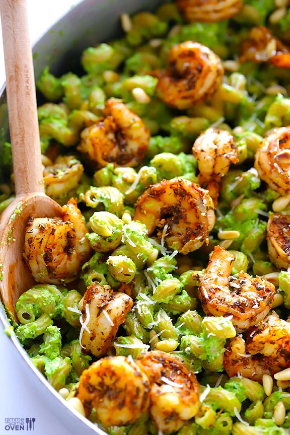

Shrimp Pesto Pasta

The sweetness of the shrimp and fried zuchinni balance nicely with the peppery arugula used in this pesto sauce.
Ingredients
- 1 cup shrimp, peeled
- 1 zuchinni sliced thin
- 1 Tbsp vegetable oil
- 3 cups pasta of your choice
- salt
Pesto Ingredients
- 2 Tbsp olive oil
- 1 cup arugula
- 2 tbsp pine nuts
- 2 garlic cloves
- parmesan cheese, shredded
- salt and black pepper
Recipe
- Cook pasta in salted water according to directions
- Rinse with cool water until pasta is warm to the touch
- Heat vegetable oil in cast iron skillet
- Add zuchinni and stir, saute until edges start to brown
- Add shrimp and cook for another 4 minutes, until shrimp become opaque and firm
- Alow to cool for 5 minutes
- Meanwhile, combine all pesto ingredients in a food processor and mix until all large chunks are gone and ingredients are well combined
- combine all ingredients in a large bowl, mix, and serve